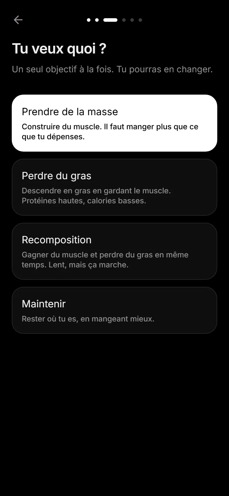
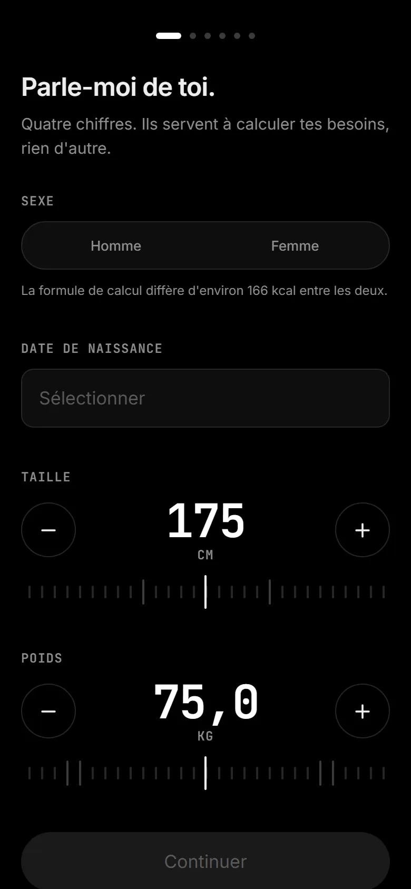
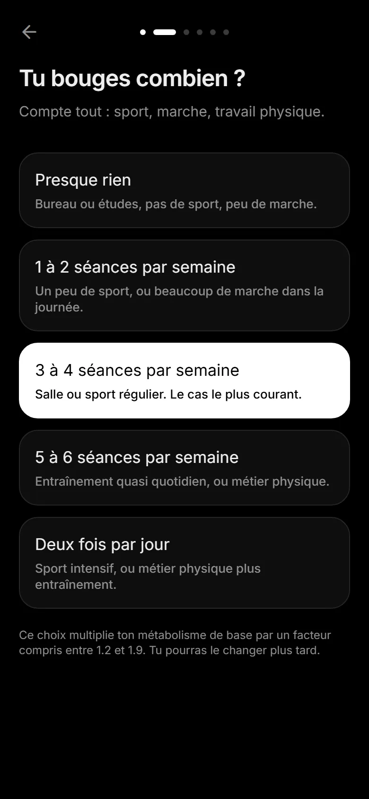
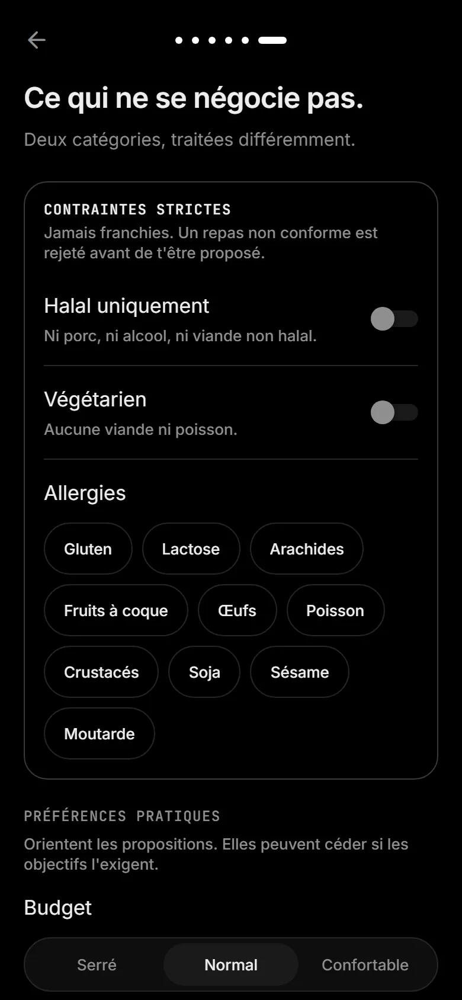
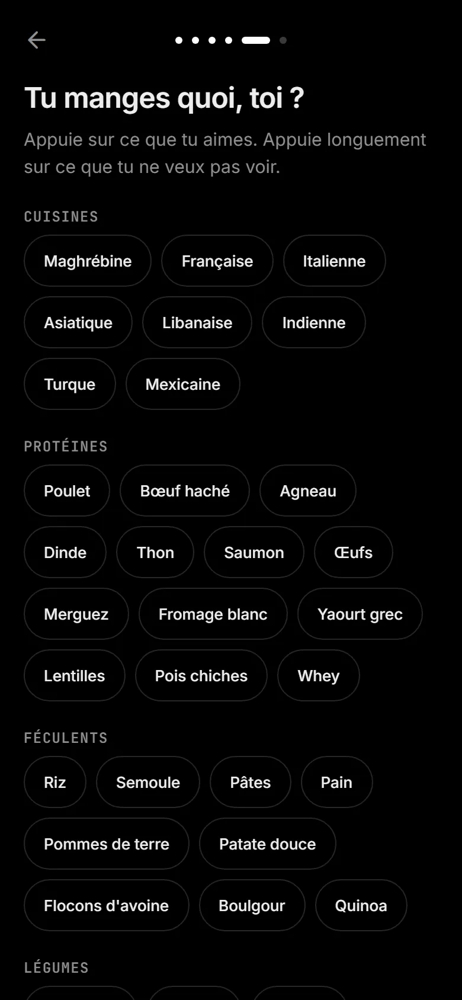
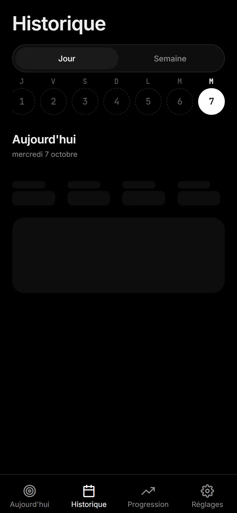

PersoProjet personnel, 2026
SubForge
Un coach nutrition où l'on décrit son repas en une phrase. L'IA propose, la personne décide.
Je reprenais la musculation avec un objectif de prise de masse, et je savais déjà où j'allais lâcher : l'alimentation. Chaque fois que j'avais essayé de suivre mes repas, j'avais abandonné au bout d'une semaine, parce que la saisie était trop lente. SubForge part de là : si noter un repas prend plus de temps que de le manger, personne ne le fera.
Code privé, projet en cours.



L’idée
On dicte ou on tape « deux œufs, une tartine beurrée et un café ». Le modèle en extrait les aliments, les quantités et les macros dans un JSON contraint par un schéma, jamais dans du texte libre qu'il faudrait relire.
La personne voit la proposition, corrige si besoin, puis valide. Rien n'est enregistré sans son accord.
Quand l’IA ne répond pas
Le plan de la journée est généré par l'IA : c'est lent, et ça peut échouer. Au-delà de 15 secondes, un plan de repli calculé sans IA prend le relais, à partir de repas prédéfinis filtrés selon les contraintes (halal, budget, temps de préparation). Une erreur à cet instant aurait gâché la première impression.
Sous le capot
Les besoins caloriques sont calculés sur le téléphone, sans réseau. Les appels à Gemini passent par des Edge Functions Supabase : la clé reste côté serveur, avec un cache et une limite de requêtes.
Les contraintes strictes, comme les allergies, sont vérifiées deux fois : dans la consigne envoyée au modèle, puis sur sa réponse. Les données sont protégées par des règles RLS, et l'application continue de fonctionner hors ligne.
Où en est le projet
Le MVP se construit en APK et AAB avec EAS, testé avec Jest et suivi avec Sentry et PostHog. Je suis son premier utilisateur : s'il ne me fait pas gagner de temps, il ne mérite pas d'exister.



Téléphone
- Voix ou texte
- Calcul des besoins en local
- File hors ligne
Edge Functions
- Clé API protégée
- Cache
- Limite de requêtes
IA
- Gemini 2.5 Flash
- Sortie JSON contrainte
- Plan de repli sans IA
Données
- Supabase Postgres
- Auth
- RLS